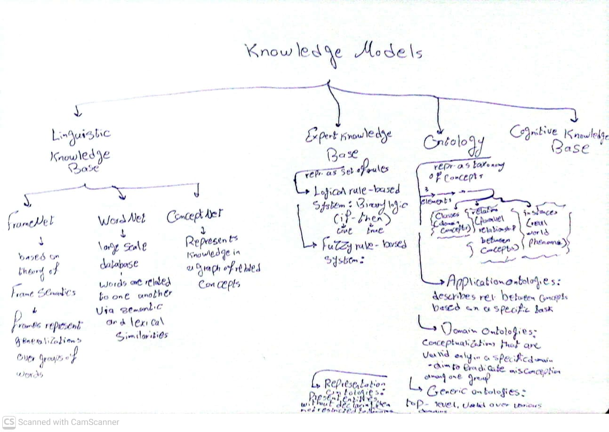

My Reflection
Overall Reflection
I found the topic of knowledge modelling interesting, just like the topics covered since the beginning of the
module. In a way, knowledge modelling can be
considered as a the group of techniques that allow knowledge representation. Therefore, I can see the topic as
central to Knowledge
representation, and I think it is the corner stone of the whole module.
The unit included a lecturecast, three reading materials and formative activities. The readings were quite
intersting for me, especially Bimba et al. (2016),
as shown below, as it gave an overview of the different knowledge models, in which knowledge can be represented
to machines.
Reflection on Readings
The following is a summary of the three reading materials of the unit, as per my understanding:
-
Towards knowledge
modeling and manipulation technologies: A survey:
This paper by Bimna et al. (2016) categorises knowledge models into four main types: linguistic knowledge
base, expert knowledge base, ontology, and
cognitive knowledge base. Linuistic knowledge base is further categorised into FrameNet, WordNet, and
ConceptNet. Expert knowledge base is sub-categorised
into rule-based systems and fuzzy rule-based systems. Ontology is categorised into application, domain,
generric and representation. Cognitive knowledge base
is not further categorised. See the second artefact below for a mind map that I created to summarise these
models. The paper also presents the limitations and
used tools for each knowledge model.
-
On-To-Knowledge:
Ontology-based Tools for Knowledge Management:
This paper by Fensel et al. (2000) presents an EU-funded project that pioneered ontology-based tools for
knowledge management, aiming to address
information overload on intranets and the web by enabling semantic rather than keyword-based access. Central
to the framework is the Ontology Inference
Layer (OIL), which integrates description logics for formal reasoning, frame-based modeling for intuitive
structuring, and web standards (XML/RDF) for
interoperability, balancing expressivity with decidability. The tool environment supports ontology-driven
querying, RDF/XML repositories,
annotation technologies, and visualization tools, while industrial case studies in insurance (Swiss Life),
telecom (BT call centres), and
energy (EnerSearch) demonstrate practical applications of semantic access to heterogeneous data.
Methodologically, the project builds on approaches
like CommonKADS to formalize ontology engineering and business case development. For Knowledge Representation
and Reasoning, the paper is significant
because it shows how formal logic-based ontologies can be applied to real-world problems, laying the
groundwork for the Semantic Web and evolving
into standards like OWL that underpin today’s knowledge graphs and AI reasoning systems.
-
The knowledge-based
economy and the triple helix model
This paper by Leydesdorff (2012) introduced me to the meaning and the challenges of the knowledge-based
economy (KBE), which was challenging for me to understand, given
that I do not have a background in the topic. As per my understanding, KBE is an economy that is driven by
innovation that is in turn based on knowledge.
However, the paper itself notes that the concept of KBE is not well defined, and lacks of the dynamic
interplay in such an economy. That is why the paper proposes
the Triple Helix model, which is a neo-evolutionary analytical framework designed to define, model and explain
the complex, non-linear dynamics of the
KBE. The main propositions of the model include that that there are three main pillars (helices) of
innovation; University, Industry and Government.
They respectively play their roles in novelty generation, wealth generation, and govenrance and control. The
non-linear interplay between these sub-dynamics is
what dialectically constructs innovation. The paper also introduced me to the concept of codified knowledge,
which is knowledge that is abstracted in a system of
symbols, and therefore is decontextualised and can be communicated and shared among different domains and
institutions, or 'traded in a market,' as the paper puts it.
I see codified knowledge as the most relevant part to the module topic.
Artefacts
Formative Activity: Questions on Readings
The formative activity of this unit included answering questions on the three reading materials. Below are my
answers:
Activity 1: Questions on Bimba et al. (2016)
Q1: What are the 3 knowledge bases identified by the authors?
The three knowledge bases identified by the authors are: Linguistic Knowledge Base, Expert Knowledge Base and
Cognitive Knowledge Base.
Q2: What are the differences between them?
Linguistic Knowledge Base focuses on the representation of knowledge through the relationsips between words,
meanings and concepts in natural language.
Expert Knowledge Base focuses on capturing and presenting knowledge in the form of logical rules or fuzzy rules.
Cognitive Knowledge Base aims to model
human cognitive processes and structures to represent knowledge in a way that mimics human thinking and
reasoning.
Q3: How are these related to ontologies?
Ontogies are presented in the paper as a separate knowledge model, but a conenction can be made, seeing that
ontology is the underlying foundation for the three
bases, as ontology -in this context- means the representation of knowledge as taxonomy of concepts, which can be
applied through linguistic, expert or
cognitive knowledge bases.
Activity 2: Questions on Leydesdorff (2012)
Q1: How does the author define a ‘Knowledge based economy’?
The paper declares that there are hardships in defining the concept of knowledge-based economy (KBE), but
generally, it can be defined as an economy that is driven by innovation
that is in turn based on knowledge.
Q2: What is the triple helix model?
The triple helix model is a neo-evolutionary analytical framework designed to define, model and explain the
complex, non-linear dynamics of the KBE.
The main propositions of the model include that that there are three main pillars (helices) of innovation;
University, Industry and Government.
They respectively play their roles in novelty generation, wealth generation, and govenrance and control.
Activity 3: Questions on Fensel et al. (2000)
Q1: What are the components of the Onto Knowledge model/ framework?
There are six components of the Onto Knowledge framework, which are: 1) Ontology-based user interaction, built
in Ontology Inference Layer (OIL);
2) Ontology construction tools; 3) Data repository layer (RDF/XML repository); 4) Query engine (XML or RDF query
engines); 5) Annotation and extraction
tools; 6)Visualisation tools.
Q2: What are the example use cases given for the framework?
There are three example use cases given for the framework, which are: 1) Swiss Life insurance company, to enable
semantic access to their intranet data;
2) British Telecom (BT) call centres, to improve customer support through semantic access to heterogeneous data;
3) EnerSearch, an energy
company, to facilitate semantic access to energy-related information.
Artefacts
Mind Map: Knowledge Models
The following mind map summarises the different knowledge models presented in Bimba et al. (2016):

Figure 1: Mind Map of Knowledge Models based on Bimba et al. (2016)
Bimba, A.T. et al. (2016) ‘Towards Knowledge Modeling and Manipulation technologies: a Survey’, International
Journal of Information Management, 36(6), pp. 857–871. Available at:
https://doi.org/10.1016/j.ijinfomgt.2016.05.022.
Fensel, D. et al. (2000) ‘“On-To-Knowledge: Ontology-based Tools for Knowledge Management”’, in eBusiness and
eWork.
Leydesdorff, L. (2010) ‘The knowledge-based Economy and the Triple Helix Model’, Annual Review of Information
Science and Technology, 44(1), pp. 365–417. Available at: https://doi.org/10.1002/aris.2010.1440440116.